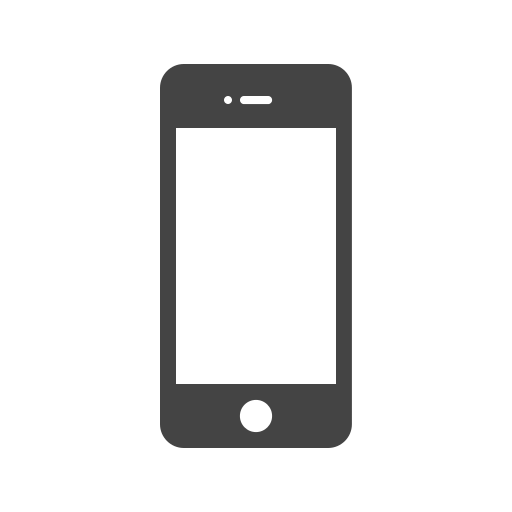
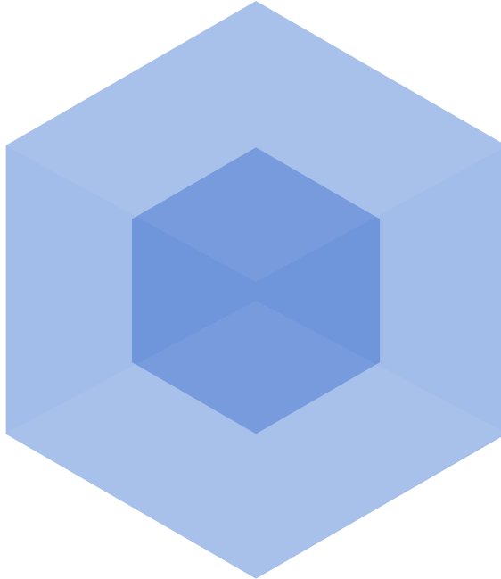
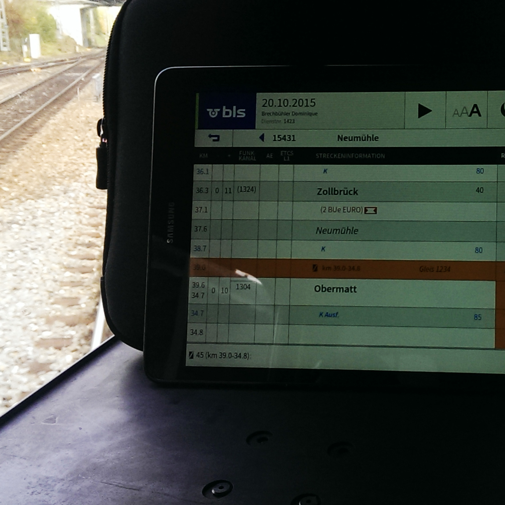
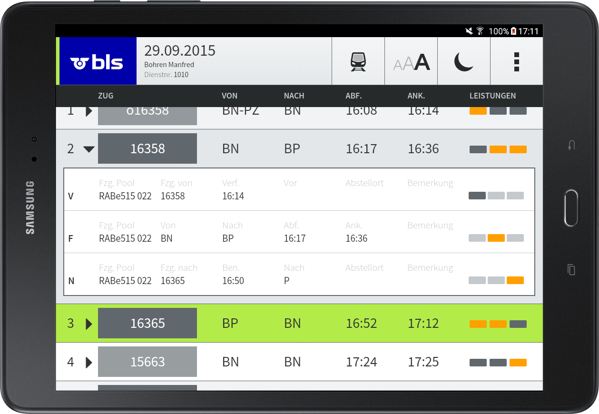
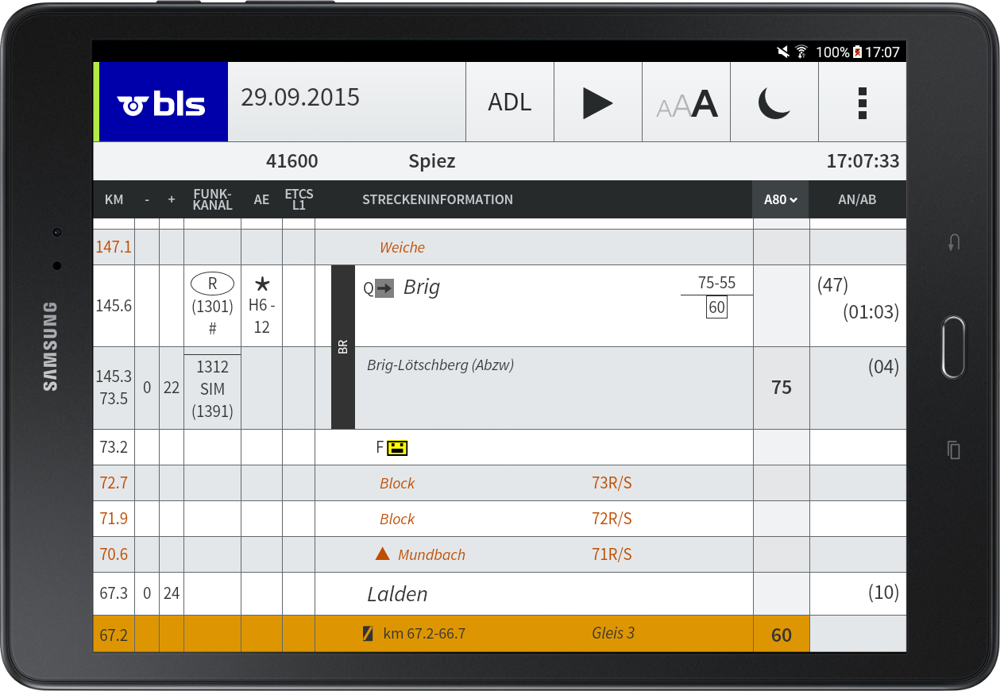
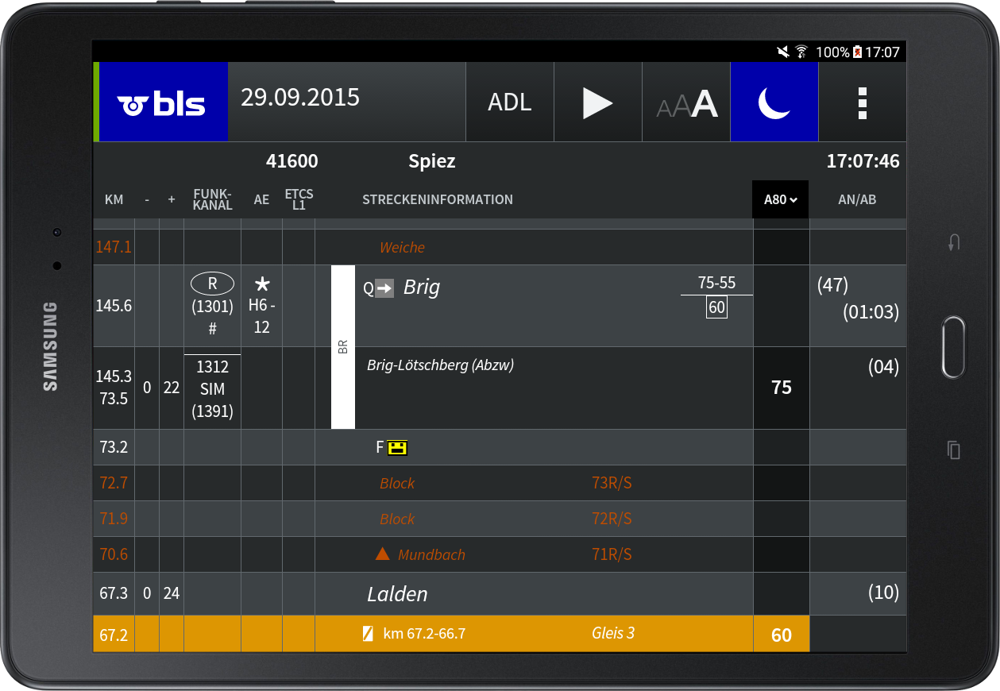
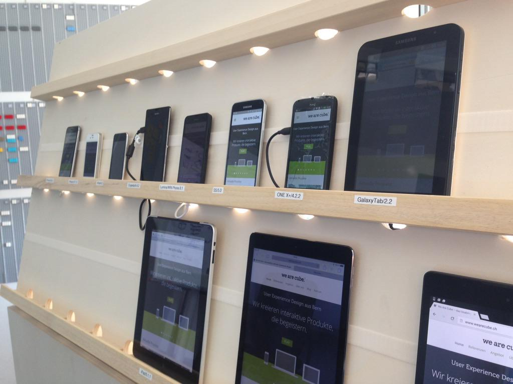

JavaScript kann auch Apps
 kann Linux
kann Linux
Quelle: bellard.org/jslinux/
kann 3D Games
kann Helikopter
kann ...
kann Mobile Apps
 +
+
 +
+
+
+

Apple iPhone (2007)
— Steve Jobs (2007)
Mobile App Downloads (in Mrd.)
Quelle: Gartner (2013)
Apps in Unternehmen

+ 72%
Quelle: Salesforce.com Studie (2014)
Hybrid-Anteil 2016
Hybrid Mobile Apps
mit Apache Cordova
Geschichte
Nitobi Software entwickelt PhoneGap, 2009↓
Adobe übernimmt Nitobi, 2011
↓
Freies Apache Projekt «Apache Cordova»
App Technologien
Native
Android, iOS, Windows Phone
Android, iOS, Windows Phone
Bridged Hybrid
Xamarin, Appcelerator, NativeScript, React Native
Xamarin, Appcelerator, NativeScript, React Native
Web
AngularJS, React, Ember.js
AngularJS, React, Ember.js
WebView Hybrid
Cordova, Trigger.io, Ionic, AppGyver
Cordova, Trigger.io, Ionic, AppGyver
Architektur
Mobile
SDK
SDK
→
Cordova
CLI
CLI
Native Application Wrapper
WebView Component
Web Application
Cordova JavaScript API
Core
Plugins
Plugins
3rd Party
Plugins
Plugins
Custom
Plugins
Plugins
Mobile OS
Storage
Accelerometer
Notification
etc.
CLI Workflow
cordova create
↓
cordova platform add
↓
cordova plugin add
↓
cordova run
↓
cordova build
Projekt erstellen
cordova create hello ch.puzzle.hello \
"Hello World"
↓
"Hello World"
config.xml
hooks/
platforms/
plugins/
www/
hooks/
platforms/
plugins/
www/
Plattformen
Amazon Fire OSAndroid
BlackBerry 10
Firefox OS
iOS
Ubuntu
Windows Phone 8/8.1
Windows 8/8.1
Tizen
Plattformen hinzufügen
cordova platform add android
cordova platform add ios
↓
cordova platform add ios
config.xml
hooks/
platforms/
www/
hooks/
platforms/
android/
ios/
plugins/ios/
www/
Plugins
Accelerometer
BatteryStatus
Camera
Capture
Compass
Connection
Contacts
BatteryStatus
Camera
Capture
Compass
Connection
Contacts
Device
Events
File
File Transfer
Geolocation
Globalization
InAppBrowser
Events
File
File Transfer
Geolocation
Globalization
InAppBrowser
Media
Notification
Splashscreen
Status Bar
Storage
Vibration
...
Notification
Splashscreen
Status Bar
Storage
Vibration
...
Registry: cordova.apache.org/plugins/
Platform Support: cordova.apache.org → Documentation
Plugins hinzufügen
cordova plugin add \
cordova-plugin-device-motion --save
↓
cordova-plugin-device-motion --save
config.xml
hooks/
platforms/
plugins/
hooks/
platforms/
plugins/
cordova-plugin-device-motion/
www/
Color Shake
Implementation
App bauen
cordova build android
↓
config.xml
hooks/
platforms/
www/
hooks/
platforms/
android/
plugins/
build/outputs/apk/
android-debug.apk
www/
Testen der App
- Emulator
- Gerät
- Browser
Testen im Emulator
cordova emulate android
Testen auf dem Gerät
cordova run android
USB
Echte Umgebung
Remote Debugging
Testen im Browser
Grunt

Gulp

Webpack
Webpack
Reale Anwendung:
LOPAS (Lok Personal Assistenz) für BLS AGWechsel der Plattform
Windows Netbook
Java Swing Client

Android Tablet
Angular Cordova App
Android Tablet
Angular Cordova App
Fotos: Roland Schwarzentrub, BLS AG
Dienstplan
Zugfahrordnung
Nachtmodus
Wieso als Hybrid App?
Web Know-howDistribution
Storage Verschlüsselung
Screen Lock
Helligkeit
Quintessenz
Nachteile von Hybrid Apps
gegenüber Native
PerformanceNative UI & feel
Plattformsupport
gegenüber Web
DeploymentVorteile von Hybrid Apps
gegenüber Native
Web Know-howPlattformunabhängig
Entwicklungskosten
gegenüber Web
Native FeaturesApp Store
Open Device Lab Bern @ Puzzle
→ opendevicelabbern.ch